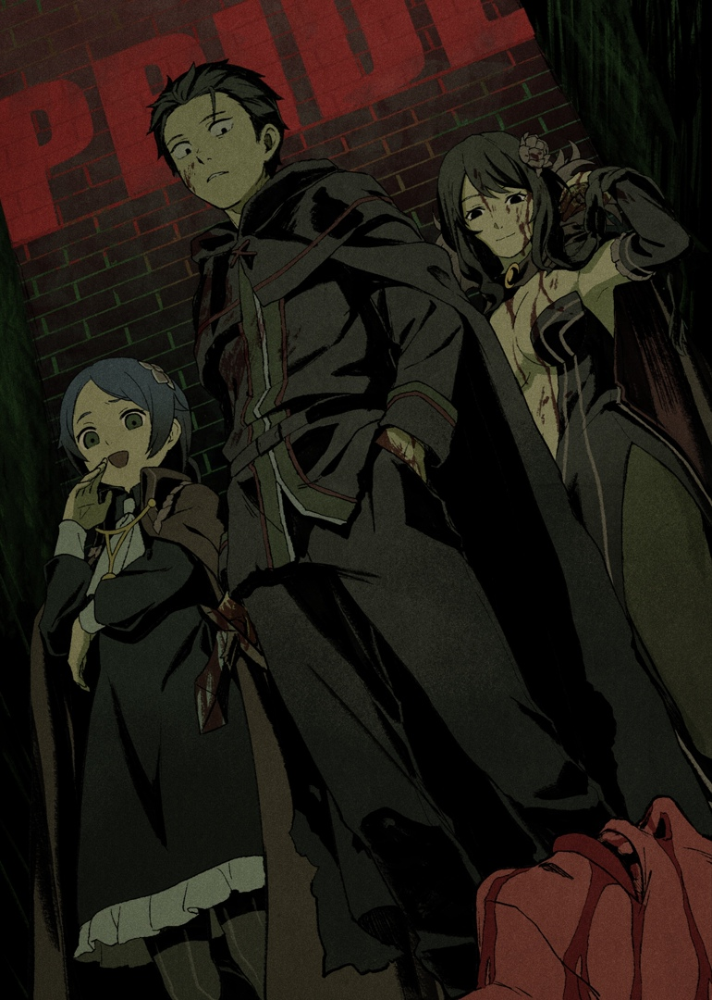
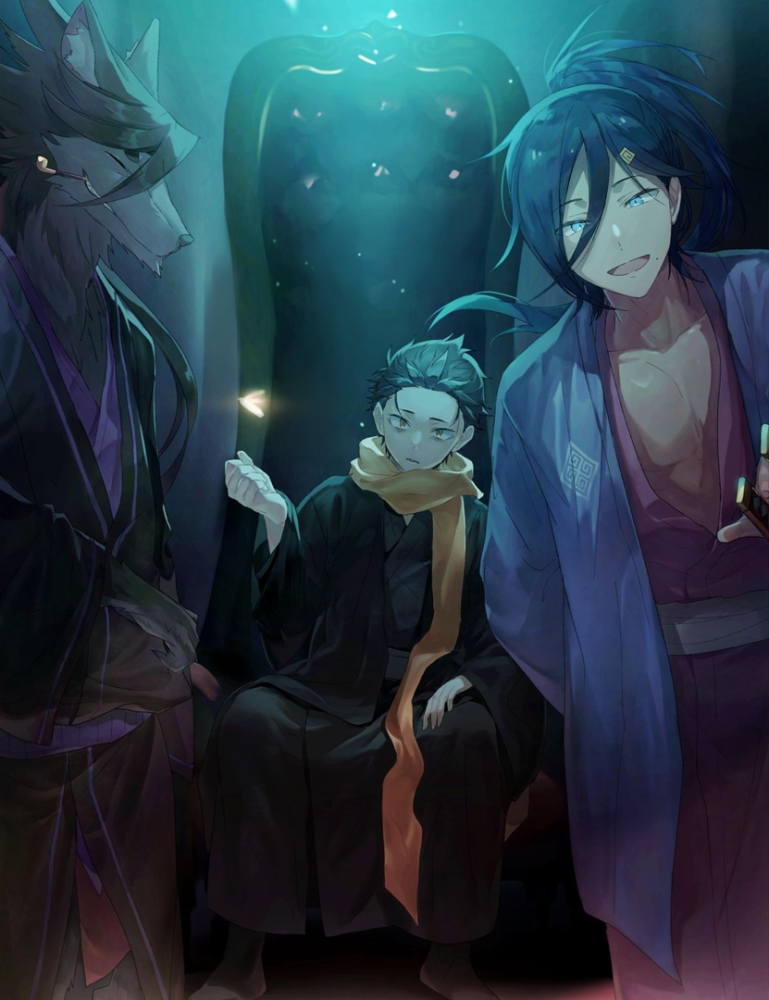
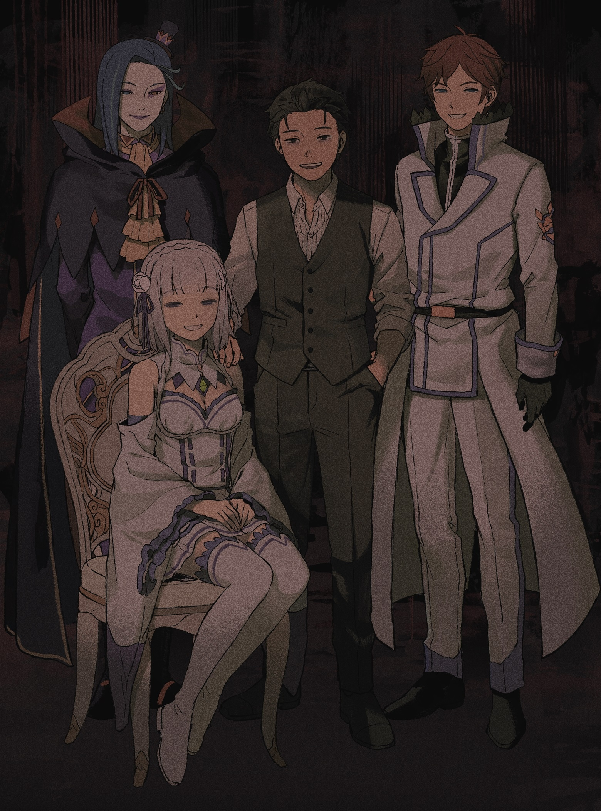
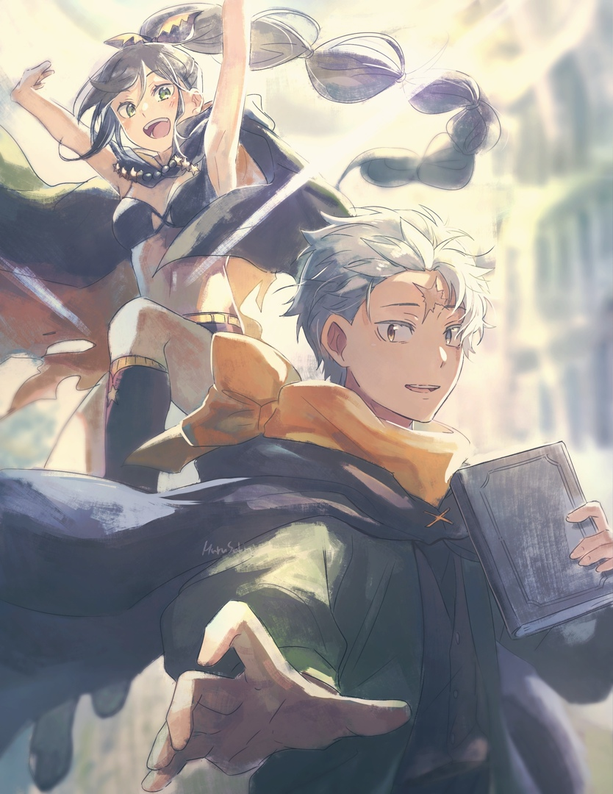

Альтернативные истории. Re:IF

Ayamatsu IF (Рут Гордыни)
Ифка показывает, что было бы, если Райнхард не пришёл на помощь Субару в первой арке.

Oboreru IF (Рут Гнева)
Ифка показывает, что было бы, если Субару не покончил с собой после заключения контракта с Беатрис во второй арке.

Kasaneru IF (Рут Алчности)
Ифка показывает, что было бы, если Субару принял предложение Ехидны в четвёртой арке.

Tsugihagu IF (Рут Чревоугодия)
Ифка показывает, что было бы, если Субару решился следовать плану "Книги мёртвых" в шестой арке.